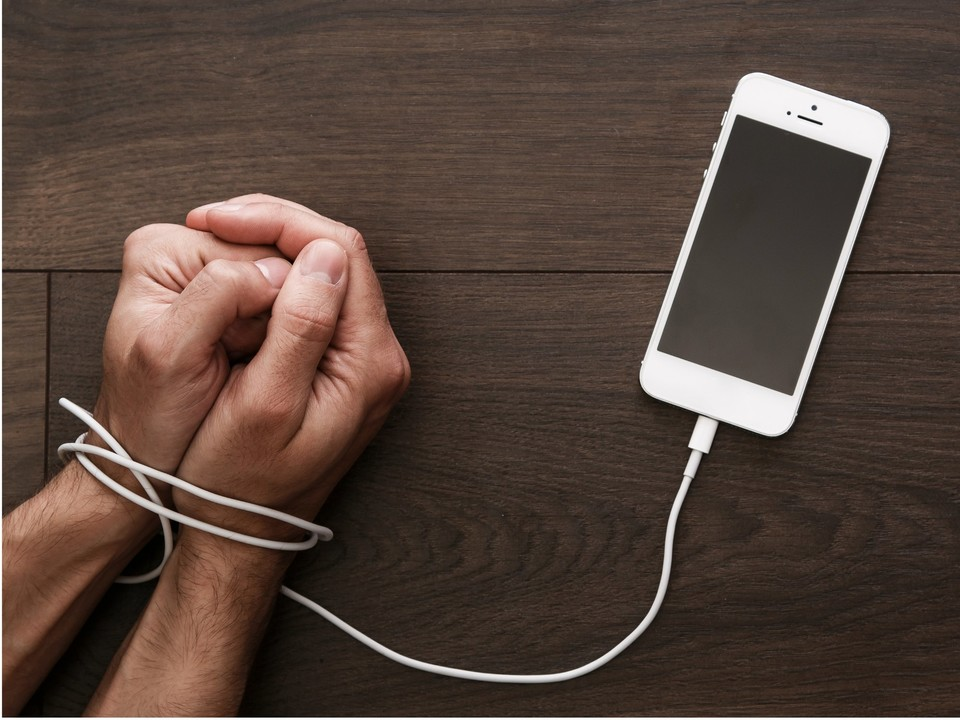

Are Smartphones Driving Our Teens to Depression?
Here is a story. In 2007, Apple released the iPhone, initiating the smartphone revolution that would quickly transform the world. In 2010, it added a front-facing camera, helping shift the social-media landscape toward images, especially selfies. Partly as a result, in the five years that followed, the nature of childhood and especially adolescence was fundamentally changed — a “great rewiring,” in the words of the social psychologist Jonathan Haidt — such that between 2010 and 2015 mental health and well-being plummeted and suffering and despair exploded, particularly among teenage girls.
For young women, rates of hospitalization for nonfatal self-harm in the United States, which had bottomed out in 2009, started to rise again, according to data reported to the C.D.C., taking a leap beginning in 2012 and another beginning in 2016, and producing, over about a decade, an alarming 48 percent increase in such emergency room visits among American girls ages 15 to 19 and a shocking 188 percent increase among girls ages 10 to 14.
Here is another story. In 2011, as part of the rollout of the Affordable Care Act, the Department of Health and Human Services issued a new set of guidelines that recommended that teenage girls should be screened annually for depression by their primary care physicians and that same year required that insurance providers cover such screenings in full. In 2015, H.H.S. finally mandated a coding change, proposed by the World Health Organization almost two decades before, that required hospitals to record whether an injury was self-inflicted or accidental — and which seemingly overnight nearly doubled rates for self-harm across all demographic groups. Soon thereafter, the coding of suicidal ideation was also updated. The effect of these bureaucratic changes on hospitalization data presumably varied from place to place. But in one place where it has been studied systematically, New Jersey, where 90 percent of children had health coverage even before the A.C.A., researchers have found that the changes explain nearly all of the state’s apparent upward trend in suicide-related hospital visits, turning what were “essentially flat” trendlines into something that looked like a youth mental health “crisis.”
Could both of these stories be partially true? Of course: Emotional distress among teenagers may be genuinely growing while simultaneous bureaucratic and cultural changes — more focus on mental health, destigmatization, growing comfort with therapy and medication — exaggerate the underlying trends. (This is what Adriana Corredor-Waldron, a co-author of the New Jersey study, believes — that suicidal behavior is distressingly high among teenagers in the United States and that many of our conventional measures are not very reliable to assess changes in suicidal behavior over time.) But over the past several years, Americans worrying over the well-being of teenagers have heard much less about that second story, which emphasizes changes in the broader culture of mental illness, screening guidelines and treatment, than the first one, which suggests smartphones and social-media use explain a whole raft of concerns about the well-being of the country’s youth.
When the smartphone thesis first came to prominence more than six years ago, advanced by Haidt’s sometime collaborator Jean Twenge, there was a fair amount of skepticism from scientists and social scientists and other commentators: Were teenagers really suffering that much? they asked. How much in this messy world could you pin on one piece of technology anyway? But some things have changed since then, including the conventional liberal perspective on the virtues of Big Tech, and, in the past few years, as more data has rolled in and more red flags have been raised about American teenagers — about the culture of college campuses, about the political hopelessness or neuroticism or radicalism or fatalism of teenagers, about a growing political gender divide, about how often they socialize or drink or have sex — a two-part conventional wisdom has taken hold across the pundit class. First, that American teenagers are experiencing a mental health crisis; second, that it is the fault of phones.
“Smartphones and social media are destroying children’s mental health,” the Financial Times declared last spring. This spring, Haidt’s new book on the subject, The Anxious Generation: How the Great Rewiring of Childhood Is Causing an Epidemic of Mental Illness, debuted at the top of the New York Times best-seller list. In its review of the book, The Guardian described the smartphone as “a pocket full of poison,” and in an essay, The New Yorker accepted as a given that Gen Z was in the midst of a “mental health emergency” and that “social media is bad for young people.” “Parents could see their phone-obsessed children changing and succumbing to distress,” The Wall Street Journal reflected. “Now we know the true horror of what happened.”
But, well, do we? Over the past five years, “Is it the phones?” has become “It’s probably the phones,” particularly among an anxious older generation processing bleak-looking charts of teenage mental health on social media as they are scrolling on their own phones. But however much we may think we know about how corrosive screen time is to mental health, the data looks murkier and more ambiguous than the headlines suggest — or than our own private anxieties, as parents and smartphone addicts, seem to tell us.
What do we really know about the state of mental health among teenagers today? Suicide offers the most concrete measure of emotional distress, and rates among American teenagers ages 15 to 19 have indeed risen over the past decade or so, to about 11.8 deaths per 100,000 in 2021 from about 7.5 deaths per 100,000 in 2009. But the American suicide epidemic is not confined to teenagers. In 2022, the rate had increased roughly as much since 2000 for the country as a whole, suggesting a national story both broader and more complicated than one focused on the emotional vulnerabilities of teenagers to Instagram. And among the teenagers of other rich countries, there is essentially no sign of a similar pattern. As Max Roser of Our World in Data recently documented, suicide rates among older teenagers and young adults have held roughly steady or declined over the same time period in France, Spain, Italy, Austria, Germany, Greece, Poland, Norway and Belgium. In Sweden there were only very small increases.
Is there a stronger distress signal in the data for young women? Yes, somewhat. According to an international analysis by The Economist, suicide rates among young women in 17 wealthy countries have grown since 2003, by about 17 percent, to a 2020 rate of 3.5 suicides per 100,000 people. The rate among young women has always been low, compared with other groups, and among the countries in the Economist data set, the rate among male teenagers, which has hardly grown at all, remains almost twice as high. Among men in their 50s, the rate is more than seven times as high.
In some countries, we see concerning signs of convergence by gender and age, with suicide rates among young women growing closer to other demographic groups. But the pattern, across countries, is quite varied. In Denmark, where smartphone penetration was the highest in the world in 2017, rates of hospitalization for self-harm among 10- to 19-year-olds fell by more than 40 percent between 2008 and 2016. In Germany, there are today barely one-quarter as many suicides among women between 15 and 20 as there were in the early 1980s, and the number has been remarkably flat for more than two decades. In the United States, suicide rates for young men are still three and a half times as high as for young women, the recent increases have been larger in absolute terms among young men than among young women, and suicide rates for all teenagers have been gradually declining since 2018. In 2022, the latest year for which C.D.C. data is available, suicide declined by 18 percent for Americans ages 10 to 14 and 9 percent for those ages 15 to 24.
None of this is to say that everything is fine — that the kids are perfectly all right, that there is no sign at all of worsening mental health among teenagers, or that there isn’t something significant and even potentially damaging about smartphone use and social media. Phones have changed us, and are still changing us, as anyone using one or observing the world through them knows well. But are they generating an obvious mental health crisis?
The picture that emerges from the suicide data is mixed and complicated to parse. Suicide is the hardest-to-dispute measure of despair, but not the most capacious. But while rates of depression and anxiety have grown strikingly for teenagers in certain parts of the world, including the U.S., it’s tricky to disentangle those increases from growing mental-health awareness and destigmatization, and attempts to measure the phenomenon in different ways can yield very different results.
According to data Haidt uses, from the U.S. National Survey on Drug Use and Health, conducted by the Substance Abuse and Mental Health Services Administration, the percent of teenage girls reporting major depressive episodes in the last year grew by about 50 percent between 2005 and 2017, for instance, during which time the share of teenage boys reporting the same grew by roughly 75 percent from a lower level. But in a biannual C.D.C. survey of teenage mental health, the share of teenagers reporting that they had been persistently sad for a period of at least two weeks in the past year grew from only 28.5 percent in 2005 to 31.5 percent in 2017. Two different surveys tracked exactly the same period, and one showed an enormous increase in depression while the other showed almost no change at all.
And if the rise of mood disorders were a straightforward effect of the smartphone, you’d expect to see it everywhere smartphones were, and, as with suicide, you don’t. In Britain, the share of young people who reported “feeling down” or experiencing depression grew from 31 percent in 2012 to 38 percent on the eve of the pandemic and to 41 percent in 2021. That is significant, though by other measures British teenagers appear, if more depressed than they were in the 2000s, not much more depressed than they were in the 1990s.
Overall, when you dig into the country-by-country data, many places seem to be registering increases in depression among teenagers, particularly among the countries of Western Europe and North America. But the trends are hard to disentangle from changes in diagnostic patterns and the medicalization of sadness, as Lucy Foulkes has argued, and the picture varies considerably from country to country. In Canada, for instance, surveys of teenagers’ well-being show a significant decline between 2015 and 2021, particularly among young women; in South Korea rates of depressive episodes among teenagers fell by 35 percent between 2006 and 2018.
Because much of our sense of teenage well-being comes from self-reported surveys, when you ask questions in different ways, the answers vary enormously. Haidt likes to cite data collected as part of an international standardized test program called PISA, which adds a few questions about loneliness at school to its sections covering progress in math, science and reading, and has found a pattern of increasing loneliness over the past decade. But according to the World Happiness Report, life satisfaction among those ages 15 to 24 around the world has been improving pretty steadily since 2013, with more significant gains among women, as the smartphone completed its global takeover, with a slight dip during the first two years of the pandemic. An international review published in 2020, examining more than 900,000 adolescents in 36 countries, showed no change in life satisfaction between 2002 and 2018.
“It doesn’t look like there’s one big uniform thing happening to people’s mental health,” said Andrew Przybylski, a professor at Oxford. “In some particular places, there are some measures moving in the wrong direction. But if I had to describe the global trend over the last decade, I would say there is no uniform trend showing a global crisis, and, where things are getting worse for teenagers, no evidence that it is the result of the spread of technology.”
If Haidt is the public face of worry about teenagers and phones, Przybylski is probably the most prominent skeptic of the thesis. Others include Amy Orben, at the University of Cambridge, who in January told The Guardian, “I think the concern about phones as a singular entity are overblown”; Chris Ferguson, at Stetson University, who is about to publish a new meta-analysis showing no relationship between smartphone use and well-being; and Candice Odgers, of the University of California, Irvine, who published a much-debated review of Haidt in Nature, in which she declared “the book’s repeated suggestion that digital technologies are rewiring our children’s brains and causing an epidemic of mental illness is not supported by science.”
Does that overstate the case? In a technical sense, I think, no: There may be some concerning changes in the underlying incidence of certain mood disorders among American teenagers over the past couple of decades, but they are hard to separate from changing methods of measuring and addressing mental health and mental illness. There isn’t great data on international trends in teenage suicide — but in those places with good reporting, the rates are generally not worsening — and the trends around anxiety, depression and well-being are ambiguous elsewhere in the world. And the association of those local increases with the rise of the smartphone, while now almost conventional wisdom among people like me, is, among specialists, very much a contested claim. Indeed, even Haidt, who has also emphasized broader changes to the culture of childhood , estimated that social media use is responsible for only about 10 percent to 15 percent of the variation in teenage well-being — which would be a significant correlation, given the complexities of adolescent life and of social science, but is also a much more measured estimate than you tend to see in headlines trumpeting the connection. And many others have arrived at much smaller estimates still.
But this all also raises the complicated question of what exactly we mean by “science,” in the context of social phenomena like these, and what standard of evidence we should be applying when asking whether something qualifies as a “crisis” or “emergency” and what we know about what may have caused it. There is a reason we rarely reduce broad social changes to monocausal explanations, whether we’re talking about the rapid decline of teenage pregnancy in the 2000s, or the spike in youth suicide in the late ’80s and early 1990s, or the rise in crime that began in the 1960s: Lives are far too complex to easily reduce to the influence of single factors, whether the factor is a recession or political conditions or, for that matter, climate breakdown.
To me, the number of places where rates of depression among teenagers are markedly on the rise is a legitimate cause for concern. But it is also worth remembering that, for instance, between the mid-1990s and the mid-2000s, diagnoses of American youth for bipolar disorder grew about 40-fold, and it is hard to find anyone who believes that change was a true reflection of underlying incidence. And when we find ourselves panicking over charts showing rapid increases in, say, the number of British girls who say they’re often unhappy or feel they are a failure, it’s worth keeping in mind that the charts were probably zoomed in to emphasize the spike, and the increase is only from about 5 percent of teenagers to about 10 percent in the first case, or from about 15 percent to about 20 percent in the second. It may also be the case, as Orben has emphasized, that smartphones and social media may be problematic for some teenagers without doing emotional damage to a majority of them. That’s not to say that in taking in the full scope of the problem, there is nothing there. But overall it is probably less than meets the eye.
If you are having thoughts of suicide, call or text 988 to reach the 988 Suicide and Crisis Lifeline or go to SpeakingOfSuicide.com/resources for a list of additional resources.